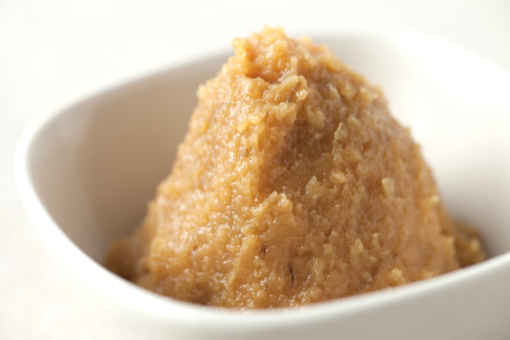

Miso Soup

https://publicdomainq.net/miso-0018849/, CC0, via Wikimedia Commons
Description
Miso soup is a traditional dish throughout Japan typically made of a fermented soy paste (miso) in addition to bonito flakes and various vegetables.
Ingredients
- 250ml Water
- 20g Miso paste of your choosing
- 5g Dried seaweed such as wakame
- 50g Tofu
- 1 Spring onion
Instructions
- Bring water to a boil in a small saucepan.
- Soak dried seaweed in water for 5 minutes.
- Chop spring onion and tofu into small pieces.
- Turn off heat and add miso paste, seaweed, spring onion and tofu.
- Stir until miso paste is dissolved.
- Enjoy!